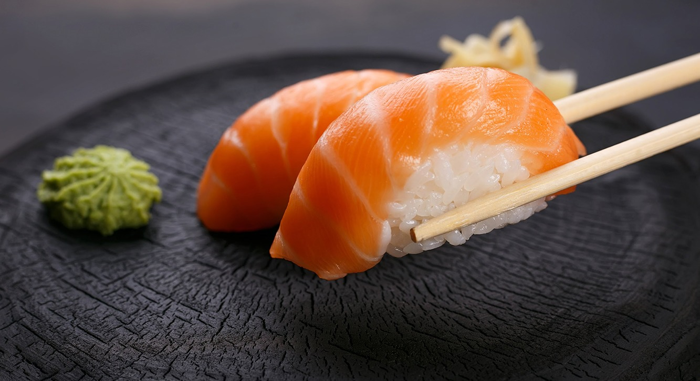

Receita de Feijoada

Ingredientes
- 500g de feijão preto
- 200g de carne seca
- 200g de linguiça calabresa
- 150g de paio
- 1 cebola picada
- 4 dentes de alho picados
- 2 folhas de louro
- Sal e pimenta a gosto
- Arroz, couve e laranja para servir
Instruções
- Deixe o feijão de molho por pelo menos 8 horas.
- Cozinhe o feijão em água com as folhas de louro até amolecer.
- Em uma panela, refogue a cebola e o alho até dourarem.
- Adicione as carnes cortadas em pedaços e frite por alguns minutos.
- Incorpore as carnes refogadas ao feijão e cozinhe por 1-2 horas em fogo baixo.
- Ajuste o sal e a pimenta a gosto.
- Sirva com arroz, couve refogada e fatias de laranja.
Voltar para as Receitas da Ásia